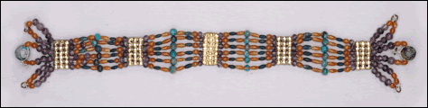

| |
The Challenge - 'The Jeweller of Memphis'
|
After many weeks, the jeweller shows you what he made. He used the carnelian, green feldspar, electrum and turquoise that you brought, as well as some beads of green glazed quartz and lapis lazuli, to make a bracelet.
|

|
The ancient Egyptians wore many different kinds of bracelets. Some were bands or bangles made out of solid metal. Others were flexible bracelets made out of strings of beads.
This bracelet is from the 12th dynasty (1900 B.C.-1800 B.C.). It is made from six rows of beads held together by spacer-bars.
|
|